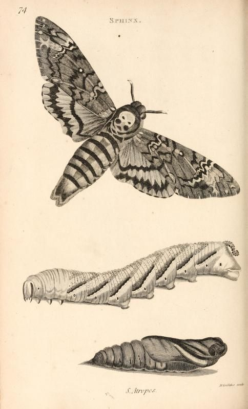

Death's Head Hawkmoth

The death's head hawkmoth is one of the most recognizable moths in the world. It gets its name from the unusual skull shaped marking found on its thorax.
These moths are large and powerful flyers. Their dark colors, yellow markings, and unusual appearance have made them popular in artwork, movies, and gothic imagery.
Why Is It So Unique?
Unlike many other moth species, the death's head hawkmoth can produce a squeaking sound. It is also known for entering beehives and feeding on honey.